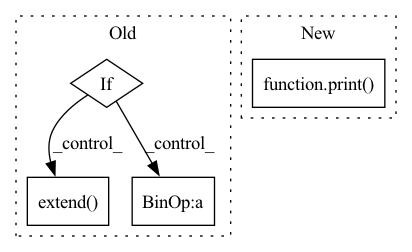

Pattern ID :23443

Before Change
for i in range(len(hidden_dims)-1):
curr_shape, next_shape = hidden_dims[i], hidden_dims[i+1]
curr_network = get_network([curr_shape, next_shape])
if use_batch_norm:
self.networks.extend([curr_network, act_cls()])
else:
bn_layer = torch.nn.BatchNorm1d(hidden_dims[i+1])
self.networks.extend([curr_network, act_cls(), bn_layer])
final_network = get_network([hidden_dims[-1],out_dim])
self.networks.extend([final_network, out_act_cls()])
self.networks = nn.ModuleList(self.networks)
After Change
class QNetwork(nn.Module):
def __init__(self,input_dim, out_dim, hidden_dims, act_fn="relu", out_act_fn="identity", **kwargs):
print("redundant parameters for Q network: {}".format(kwargs))
super(QNetwork, self).__init__()
if type(hidden_dims) == int:
hidden_dims = [hidden_dims]
hidden_dims = [input_dim] + hidden_dims
In pattern: SUPERPATTERN
Frequency: 3
Non-data size: 4
Instances
Fragment ID: 73580878
Project Name: x35f/unstable_baselines
Commit Name: a5871d3488b73457316980bf84fb817d1081de6d
Time: 2021-11-20
Author: 1621322691@qq.com
File Name: common/networks.py
M Class Name: QNetwork
N Class Name: QNetwork
M Method Name: __init__(6)
N Method Name: __init__(7)
M Parent Class: nn.Module
N Parent Class: nn.Module
M File Name: common/networks.py
N File Name: common/networks.py
M Start Line: 47
M End Line: 63
N Start Line: 48
N End Line: 59
'>
Before Change
for i in range(len(hidden_dims)-1):
curr_shape, next_shape = hidden_dims[i], hidden_dims[i+1]
curr_network = get_network([curr_shape, next_shape])
if use_batch_norm:
self.networks.extend([curr_network, act_cls()])
else:
bn_layer = torch.nn.BatchNorm1d(hidden_dims[i+1])
self.networks.extend([curr_network, act_cls(), bn_layer])
final_network = get_network([hidden_dims[-1],out_dim])
self.networks.extend([final_network, out_act_cls()])
self.networks = nn.ModuleList(self.networks)
After Change
class VNetwork(nn.Module):
def __init__(self,input_dim, out_dim, hidden_dims, act_fn="relu", out_act_fn="identity", **kwargs):
super(VNetwork, self).__init__()
print("redundant parameters for V network: {}".format(kwargs))
if type(hidden_dims) == int:
hidden_dims = [hidden_dims]
hidden_dims = [input_dim] + hidden_dims
self.networks = []
'>
Fragment ID: 73580879
Project Name: x35f/unstable_baselines
Commit Name: a5871d3488b73457316980bf84fb817d1081de6d
Time: 2021-11-20
Author: 1621322691@qq.com
File Name: common/networks.py
M Class Name: VNetwork
N Class Name: VNetwork
M Method Name: __init__(6)
N Method Name: __init__(8)
M Parent Class: nn.Module
N Parent Class: nn.Module
M File Name: common/networks.py
N File Name: common/networks.py
M Start Line: 74
M End Line: 90
N Start Line: 73
N End Line: 83
'>
Before Change
):
client_scores = self.compute_client_scores(raw_client_grad_list)
print(f"client scores = {client_scores}")
if self.iteration_num < self.pretraining_round_number:
self.score_list.extend(list(client_scores))
self.mu, self.sigma = self.compute_gaussian_distribution()
// if self.mu + self.bound_param * self.sigma >= 0:
self.upper_bound = self.mu + self.bound_param * self.sigma
// if self.mu - self.bound_param * self.sigma <= 0:
self.lower_bound = self.mu - self.bound_param * self.sigma
self.iteration_num += 1
After Change
print(f"client scores = {client_scores}")
mu, sigma = compute_gaussian_distribution(client_scores)
self.upper_bound = mu + self.bound_param * sigma
print(f"mu = {mu}, sigma = {sigma}, upperbound = {self.upper_bound}")
new_client_models, _ = self.kick_out_poisoned_local_models(client_scores, raw_client_grad_list)
importance_feature_list = self._get_importance_feature(new_client_models)
alphas = [1 / len(importance_feature_list)] * len(importance_feature_list)
self.median = compute_middle_point(alphas, importance_feature_list)
'>
Fragment ID: 73580876
Project Name: fedml-ai/fedml
Commit Name: 0c00424b8658cf7b1d36fdf61146a5bee2465478
Time: 2022-10-22
Author: sshan0731@hotmail.com
File Name: python/fedml/core/security/defense/three_sigma_krum_defense.py
M Class Name: ThreeSigmaKrumDefense
N Class Name: ThreeSigmaKrumDefense
M Method Name: defend_before_aggregation(3)
N Method Name: defend_before_aggregation(3)
M Parent Class: BaseDefenseMethod
N Parent Class: BaseDefenseMethod
M File Name: python/fedml/core/security/defense/three_sigma_krum_defense.py
N File Name: python/fedml/core/security/defense/three_sigma_krum_defense.py
M Start Line: 57
M End Line: 77
N Start Line: 55
N End Line: 65